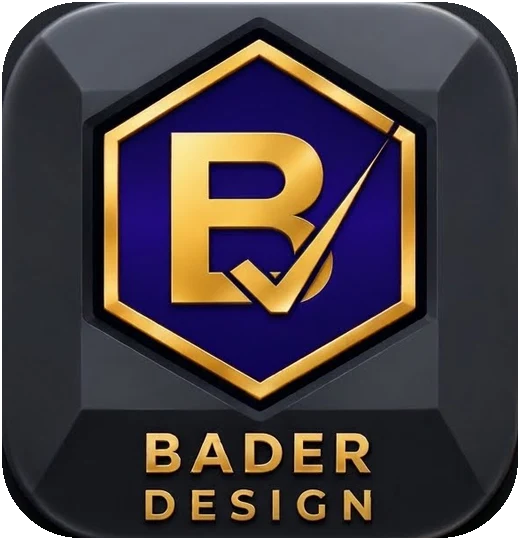

Ottenbach ZH · Oberflächen · Holz & Epoxidharz · Bader Digital
Handwerk mit Handschrift.
Ich bin gelernter Maler und liebe meinen Beruf. Jede Wand gestalte ich individuell, so wird sie zum Unikat. In meiner Werkstatt arbeite ich mit Holz, Epoxidharz, CNC-Fräse und CO2-Laser und fertige kleine Kunstwerke: persönliche Geschenke ebenso wie Werbegeschenke mit Logo. Nebenbei arbeite ich an Bader Digital, einem kleinen persönlichen Projekt: eine App, die meinen Papierkram von der Baustelle digital macht.
